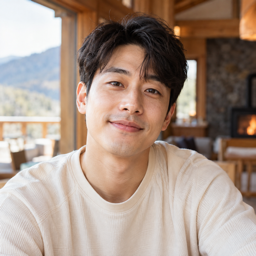
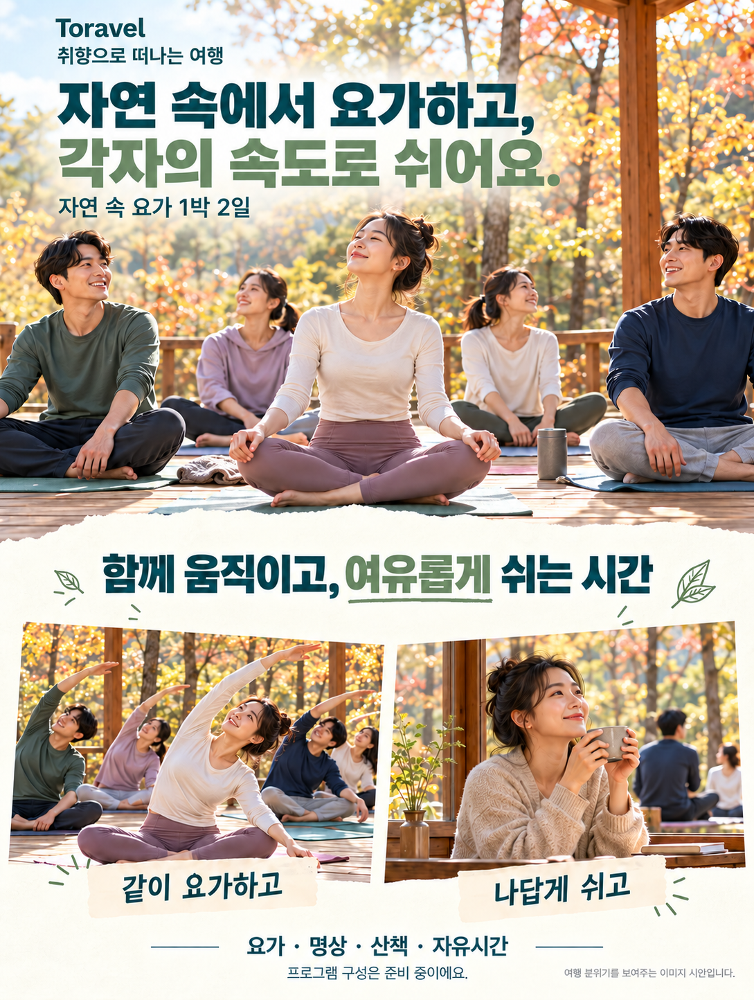
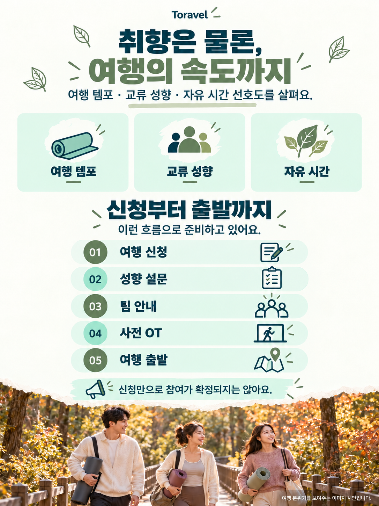
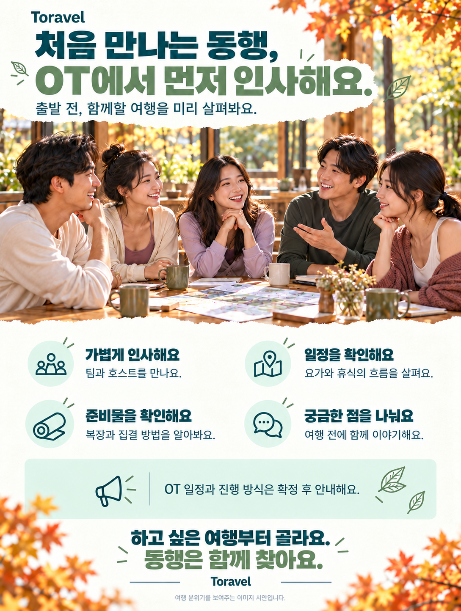

나나★★★★★
너무 로망이었던 자연 속의 요가를 할 수 있어서 좋았어요! 사람들도 저와 잘 맞는 사람들이 매칭되어 행복했습니다.

너무 로망이었던 자연 속의 요가를 할 수 있어서 좋았어요! 사람들도 저와 잘 맞는 사람들이 매칭되어 행복했습니다.

매번 남성 요가하는 사람이 적어 부담이었는데 간만에 편안한 요가를 즐겼습니다.
너무 너무 힐링되고 행복한 시간이었어요. 다음에도 열리게 되면 꼭 참여하고싶어요!
자연 속에서 몸과 마음의 속도를 잠시 늦춰보는 여행
자연과 요가를 중심으로 구성되는 1박 2일 콘셉트 여행입니다.
자연 가까운 곳에서 요가와 명상을 즐기는 1박 2일 여행을 준비하고 있어요. 첫날 메인 요가와 다음 날 모닝 요가 사이에는 자유롭게 쉬는 시간을 두려고 해요. 여행 지역과 숙소, 출발·복귀 일정은 확정 후 안내해요.
같이 요가하고, 각자의 속도로 쉬어요. 요가와 자연을 좋아하는 2030이 함께하는 여행이에요. 신청 단계에서 여행 템포와 교류 성향, 자유시간 선호도를 살펴 팀을 구성할 예정이에요. 요가 강사는 수업을, Toravel 호스트는 이동과 일정 안내를 맡는 방식으로 준비하고 있어요. 자유시간에는 혼자 쉬거나 원하는 사람과 산책할 수 있어요. 출발 전에는 사전 OT에서 서로 인사하고 여행 준비를 확인할 예정이에요.
※ 준비 중인 일정 구성안으로, 세부 시간과 순서는 확정 후 안내해요.
수업 시간과 난이도, 초보자를 위한 진행 방식은 강사 섭외 후 안내해요.
최종 포함 범위는 참가비 확정 시 함께 안내해요.



확정된 정보와 준비 중인 내용을 확인해 주세요.
다른 여행도 확인해 보세요.